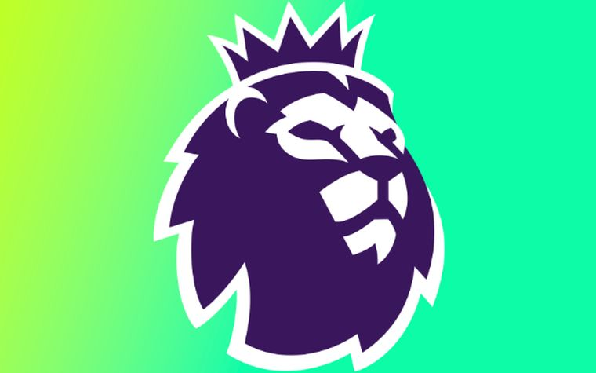

Data visualisations
Built to settle
an argument.
Six Tableau dashboards, each one started because I couldn't find a straight answer to something. Two of them turned into articles once the data said something worth writing down.
Six dashboards · all open on Tableau Public
Was the collapse in output real, or was it fixtures, chance quality and a change of shirt? Built first, then written up.
Does Bielsa's method measurably exhaust a squad by spring, or does the theory just fit a few famous cases?
The stats that carried Manchester City to the title — the season broken down rather than summarised.
Man in the shadows. Profiling a player whose value barely registers in conventional statistics.
Where in an innings does a bowler actually leak runs? Economy mapped across phases rather than averaged flat.

The 2024/25 table as it finished, against what Opta predicted it would be.
The writing that came out of these
I build the data first, then find out what it says.
Some of these answered the question in a chart and stopped there. Two of them turned into something worth reading.